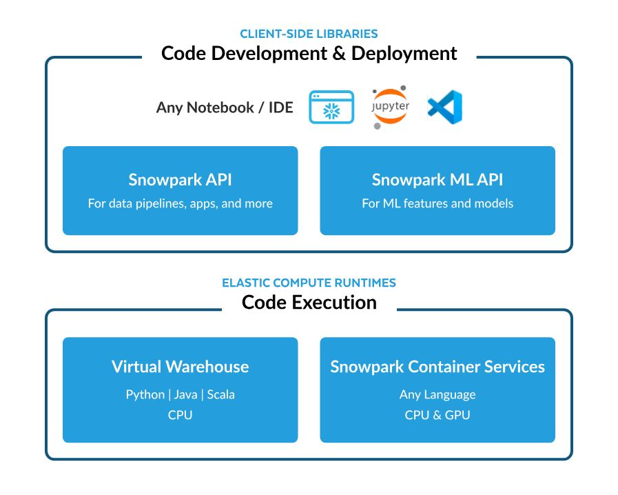

Snowflake产品堆栈
Cortex
- +ML functions(LLM和机器学习常用功能)
- +vector search functions(相当于内置vector db)
- 因为有了ML和vector db功能，所以可以创建RAG应用
- 对接的是开源大模型，不支持用户训练，也没有自己的模型
Marketplace // 数据源和数据Apps平台
- 第三方可以提供数据源和数据Apps，用snowflake来做分析
- demo里面提到数据源可以在不同的region/vendor(GCP, Azure)之间分享(snowgrid)
Native Apps
- 用户可以基于snowflake数据制作apps，然后发布到marketplace上。
- 这些apps可以在snowflake上面运行，执行模式看上去也是类似aws lambda function.
Snowpark // 数据分析，模型训练，data pipeline等系列library和runtime
- snowpark container services 是长期运行任务，提供了专门的执行环境
- 文档来看管理这些机器还是可以在warehouse里面使用SQL命令来实现
- snowpark底层其实类似DBFS的文件系统
- 感觉snowflake也做了许多基础设施建设，但是没有像DBX一样单独拎出来说明

Streaming // snowpipes + dynamic tables. 可能类似DBX的delat live tables.
Snowflake 动态表和声明性流数据管道 — Snowflake Dynamic Tables and Declarative Streaming Data Pipelines
Streamlit // 这个像是专门为snowflake设计的交互式App开发框架
Horizon // 好像是做data governance的，暂时不知道具体有什么用途